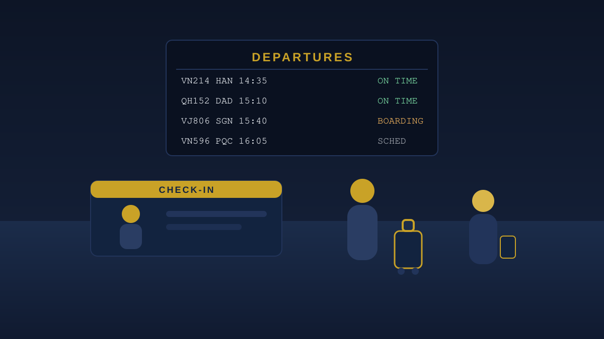

出境三道队:各卡在哪
| 环节 | 平峰 | 高峰 | 卡点什么 |
|---|---|---|---|
| 1. 值机托运 | 10-25分钟 | 30-60分钟 | 柜台前长队,行李超重现场分装 |
| 2. 安检 | 5-15分钟 | 20-40分钟 | 开包检查、充电宝/液体逐个看 |
| 3. 出境移民 | 10-25分钟 | 30-60分钟 | 人工柜台盖章,航班波次叠加 |
三道队是串行的 - 总耗时不是三者取大,而是相加。傍晚高峰SGN出境全套走下来90-120分钟并不夸张。
到底提前多久到机场
- 国际航班:官方建议3小时,旺季和傍晚高峰这个数字是认真的。淡季中午航班2.5小时也够。
- 越南国内航班:提前1.5-2小时,SGN国内航站楼高峰一样排队。
- 红眼航班注意:值机柜台有开放时间,去太早柜台还没开,去太晚托运截载(通常起飞前60分钟停止托运)。
能自己省掉的队
- 网上值机:只带手提行李可以直接去安检,跳过柜台队。但要托运还是得排。
- 行李合规提前查:充电宝不能托运只能随身、液体单瓶不超100ml、免税店液体保留密封袋 - 安检开包是大头。
- 登机牌+护照拿在手上:出境柜台前翻包找证件浪费的是自己和后面所有人的时间。
出境快速通关服务做什么
- 工作人员在出发厅或约定点接你,协助走优先值机柜台办托运。
- 陪同走优先安检通道和优先出境柜台,把两道长队跳过。
- 送你到登机口方向,全程到过完出境为止约20-30分钟。
最值的场景:傍晚高峰航班、带老人小孩(没人想在最后一晚把家人耗在队里)、以及行程紧到机场只剩2小时的情况。价格按机场和套餐,从$25/人起 - 见中文指南首页的机制说明。
出境小抄
- 出境不再填纸质出境卡 - 护照+登机牌直接给柜台盖章。
- 护照上没盖入境章/签证逾期要先处理,出境柜台会拦。
- 退税(TRS)柜台在出境后,想退税要在安检前留时间。
- SGN国际是T2,国内是T1,两栋楼不连通 - 打车报航站楼别报错。
常见问题
从越南飞国际航班要提前多久到机场?
官方建议3小时,旺季/傍晚高峰这个数是真的 - 值机托运、安检、出境移民三道队每道高峰都可能30-60分钟,而且是串行的,一道慢了后面全被压缩。
出境要交出境卡或盖章吗?
现在越南出境一般不再填纸质出境卡,出示护照和登机牌在移民局柜台盖章出境即可。
网上值机了还要排队吗?
有托运行李还是要排柜台托运。只带手提行李且已拿到登机牌,可以直接去安检 - 能省第一道队,但安检和出境两道队还是要排。
出境快速通关服务做什么?
工作人员协助值机托运(优先柜台),陪同走优先安检和优先出境通道,把你送到登机口方向。适合傍晚高峰航班、带老人小孩、或到机场时间已经偏紧的情况。
对应机场的到达攻略:新山一机场、内排机场、岘港机场。转机问题看转机攻略。
约15分钟机舱门到出口 - 运营方平均通关时间
≤2小时工作时间内预订确认
从$25起每人 - 按机场和套餐定价
中文服务中文工作人员可全程沟通
回程不想再排三小时?预订出境快速通关:
预订快速通关 - 实时价格SGN · HAN · DAD - 优先值机 + 优先安检 + 优先出境
预订后2个工作小时内人工确认,按你的航班安排工作人员。无需预付 - 见面当天付现金。